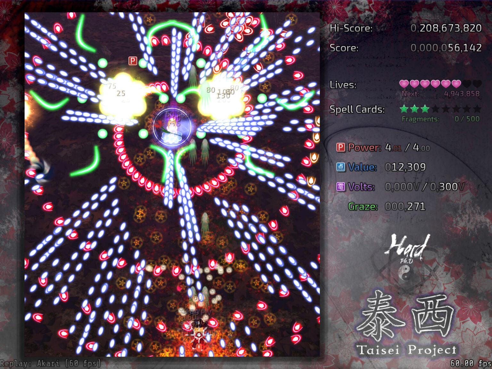

Taisei Project  Жанр bullet hell Этот жанр игр характерен тем, что игрок должен уварачиваться от множества снарядов(bullet из названия) Разработка У игры полностью открытый исходный код repo Игра написана на языке C (стандарт C11) и использует SDL3 и OpenGL Факты Taisei Project - это фан-игра по вселенной Tōhō Project, из-за чего в игре есть персонажи от туда Игра запускается на большенстве unix-like системах